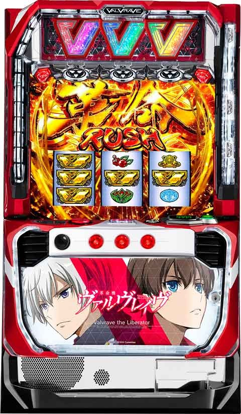

L革命機ヴァルヴレイヴ 高モード狙い

ヴァルヴレイヴ 高モード狙い
店データ機がCZで信号上がる店舗が望ましい。
当選の割合はざっくりです。
G数は液晶のG数。
実G数は店データ機でのG数。
—————-
・各モードについて
①モードA 天井 900ゾーン
特徴
AT or革命ボーナス後は最も滞在する(70-80%)。
700Gのゾーンを抜けるとモードA確定。
液晶500から打てる(ワンチャンモードB滞在込み)。
モードBに移行しやすい。(60%くらい)
当選の振り分け
200ゾーン30%
600ゾーン25%
900ゾーン25%
100.400ゾーン各10%
②モードB 天井 700ゾーン
特徴
AT or 革命ボーナス後の1スルー 以降は滞在している割合高い。
モードB以上濃厚のケースは液晶300から打てる(ワンチャンモードC滞在込みで)。
300.500.700のゾーン当選はモードB以上濃厚。
BからCへの移行は30%程度。
当選の振り分け
200ゾーン25%
700ゾーン25%
100.300.400.500.600ゾーン各10%
③モードC 天井 500ゾーン
特徴
いわゆる高モード。
液晶100以内の当選はモードC以上濃厚。
モードC濃厚なケースは液晶100から打てる。
累計3スルー超えてくるとC以上に滞在してるケースが増えてくる。
400ゾーンまでにほぼ当たる。
CからDへの移行率は30%程度。
当選の振り分け
100.200ゾーン各25%
0.300.400ゾーン各15%
500ゾーン数%
④モードD 天井 300ゾーン
特徴
最も初当たり軽い。ただしDまで行くとモードBに80%、Cに10%程度転落する。
液晶0から打てるがモード転落するため、実際は液晶0から打てない。
Cに近い挙動するためCと区別がつかない。
当選の振り分け
200ゾーン40%
100ゾーン25%
0.300ゾーン各15%
—————-
実G数当選からのモード推測
前回のG数を大量繰越ししてるケースがあるため注意。
① 0-100
累計2スルーまではモードAの早い初当たりを引いてる可能性高い。
モードB以上濃厚なケースで複数回あると、モードC以上の期待が持てる。
②100-200
①に近い感じ。モードC以上だと実Gで200以内の当選を繰り返してる事が多い。
高モード狙い時は200以内でのCZ当選が続いている事が望ましい。
③200-300
順当に行けば300-500くらいで当選してそう。
累計スルーが２スルー以内だとまだモードA(200.600当選)に滞在してる事がある。
③300-400
ここまでハマるとモードC.Dの可能性が下がってくる。順当に行けば500-700くらいで当選してそう。液晶の進みが悪いモードCの可能性もあるが、強気に考えずモードB以下と考えた方が安全。
④400-500
ほぼモードAかB。
⑤500-600(モードA可能性高い)
モードAの可能性が上がってくる。
例えば累計2.3スルーしていても前回がこの当選G数なら前回モードA滞在を疑った方が良い。
⑤600超え(モードA濃厚)
ほぼモードA。累計スルーしていても前回や前々回の履歴にある場合は、狙い目よりボーダー上げた方が良い。
—————-
マスの前兆について
①0マス 前兆発生で早い初当たりの示唆。積極派はCZ当選まで。稀にA天井までハマる。
②300.500.700マス 前兆発生でモードB以上濃厚。前兆無いからモードAという感じではない。
300マス前兆発生後で落ちてたらそのまま打てそう。
③各マス下二桁後半での前兆ステージ移行はチャンスアップ。
240くらいで200の前兆が発生していない場合は200ゾーン狙い出来る。
150までで100マスの前兆非発生時は100ゾーン外れても200ゾーンでCZ当選率アップするとの事。
そのまま200ゾーン前兆まで？
200ゾーンは各モード強いため液晶200以上進んでいれば200のゾーン狙い出来そう？
—————-
各累計スルー毎の狙い目(スロ塾の狙い目基準)
①【累計1スルー 】
前回モードA濃厚or可能性高いはボーダー上げる
400→450
当該モードB以上濃厚はボーダー下げる
400→350
②【累計2スルー】
(確率的に80%以上モードB以上)
①同様前回モードA濃厚or可能性高いはボーダー上げる
300→450
前々回モードA濃厚はボーダー上げる
300→400
0ゾーン前兆有りは液晶100から打てそう。
(上記のボーダー上げる要因がある時はダメ)
300→100
③【累計3スルー】
(確率的に90%以上モードB以上モードC以上35%くらい)
②同様前回モードA濃厚or可能性高いはボーダー上げる
200→450
②同様前々回モードA濃厚はボーダー上げる
200→400
前回実G300超えはボーダー上げる
200→300
②同様0ゾーン前兆有りは液晶100から打てそう。
(前回か前々回モードAの可能性ある時はダメ)
200→100
④【累計4スルー】
(確率的にモードC以上50%以上、Aは数%)
③とほぼ同様。
4スルー以降は同様の扱いで。
3スルーよりも更に0ゾーン前兆有りが強い傾向。
前回、前々回と実G200以内の当選が続いていればモードC以上の期待度アップ
200→100
モードC以上濃厚なケースが続くと、モードDまで上がり、その後モードBに転落する事がある。0ゾーン前兆有りは100から、無しは200からなど各自調整した方が良さそう